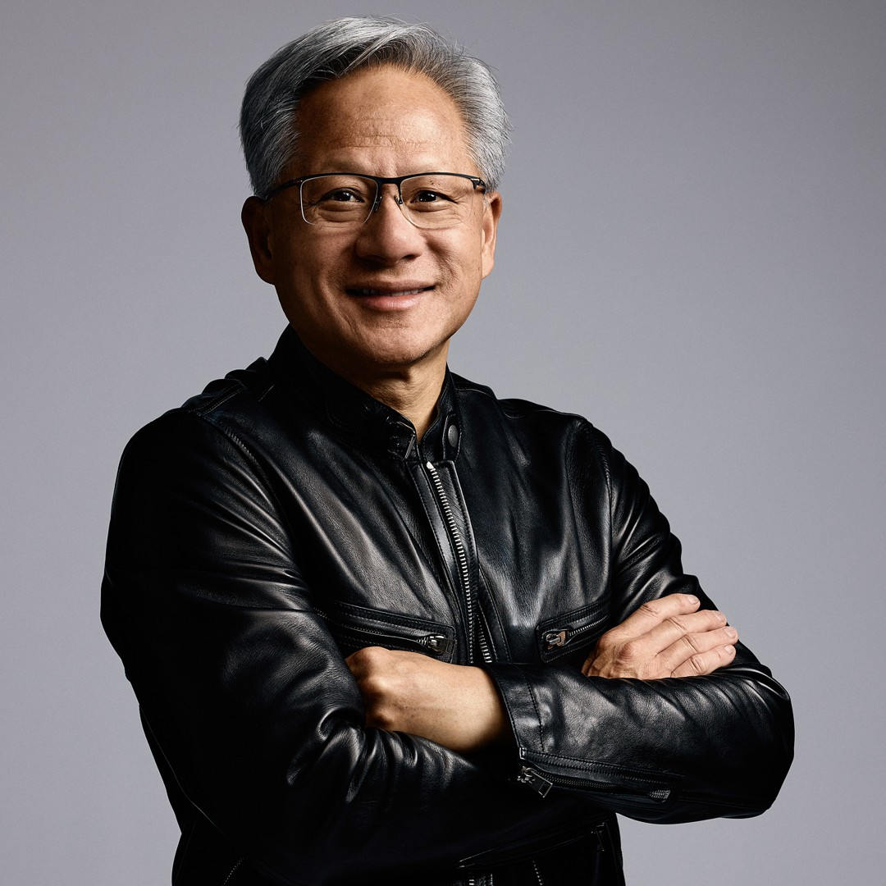
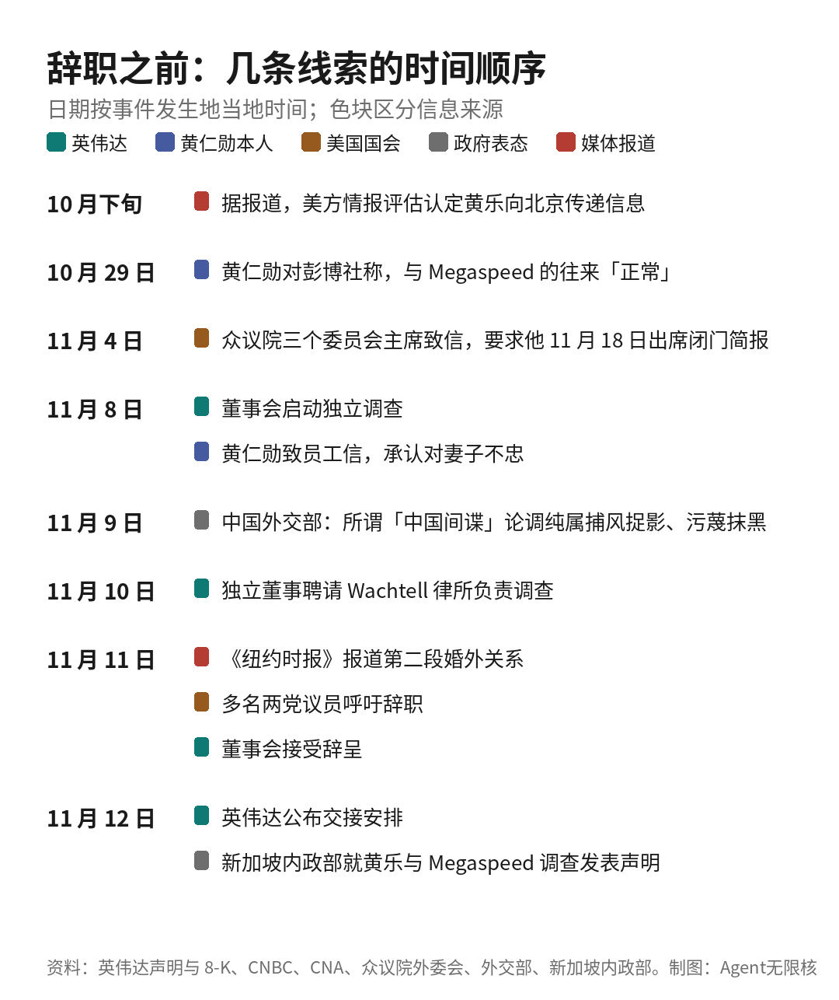
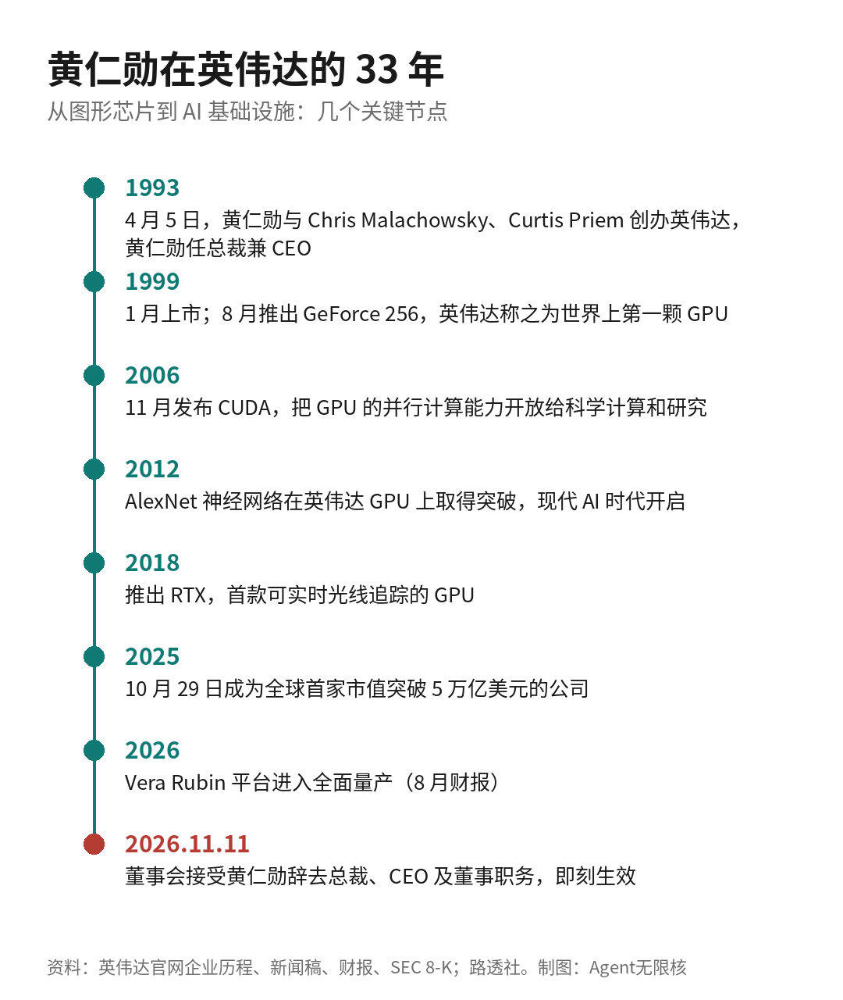
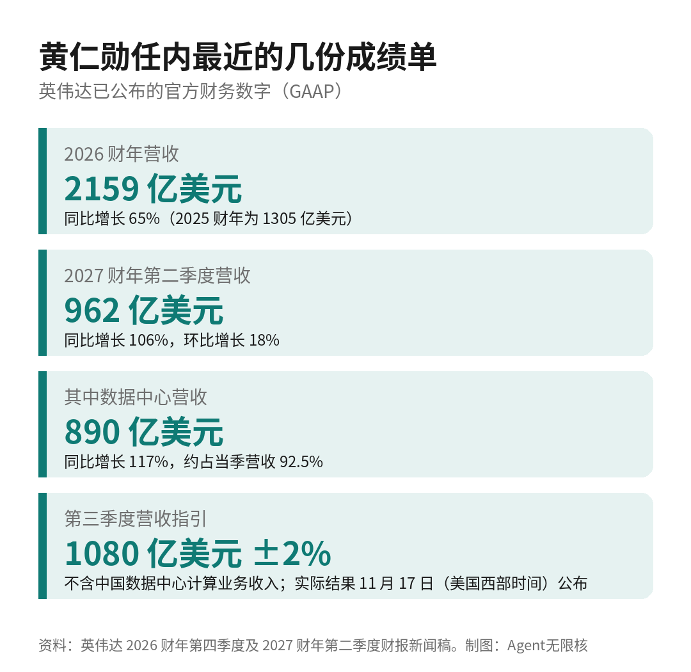
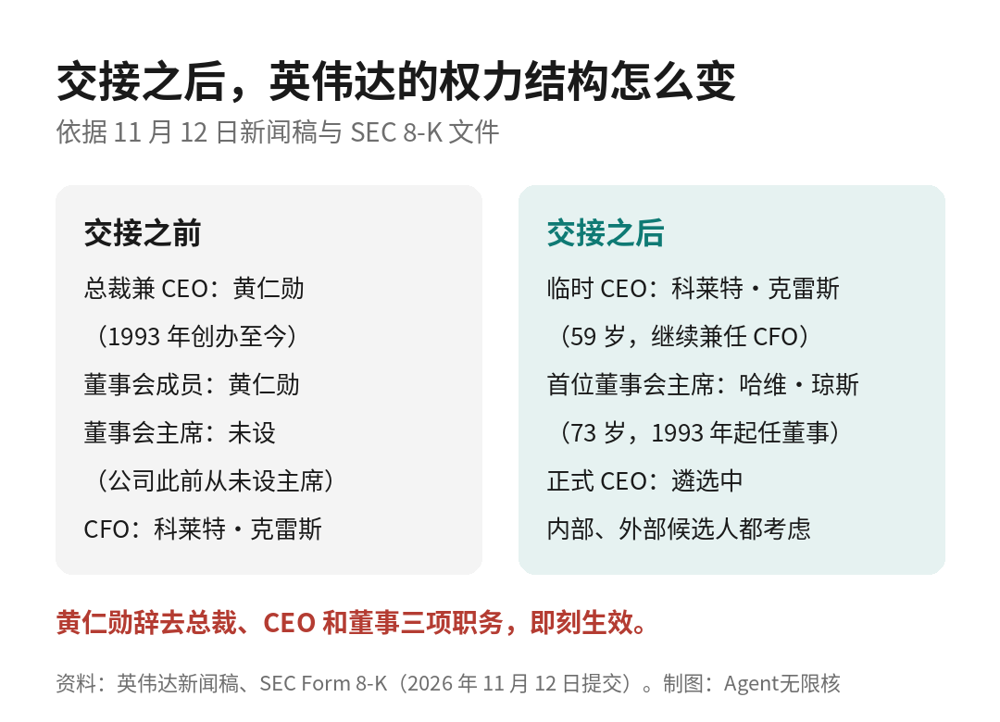
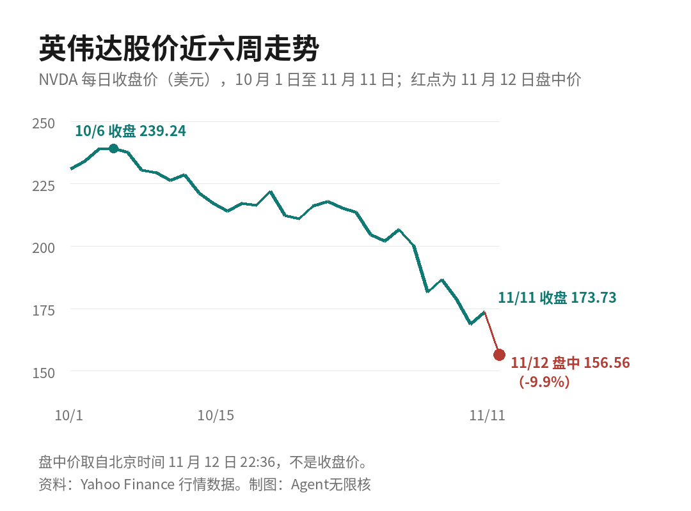
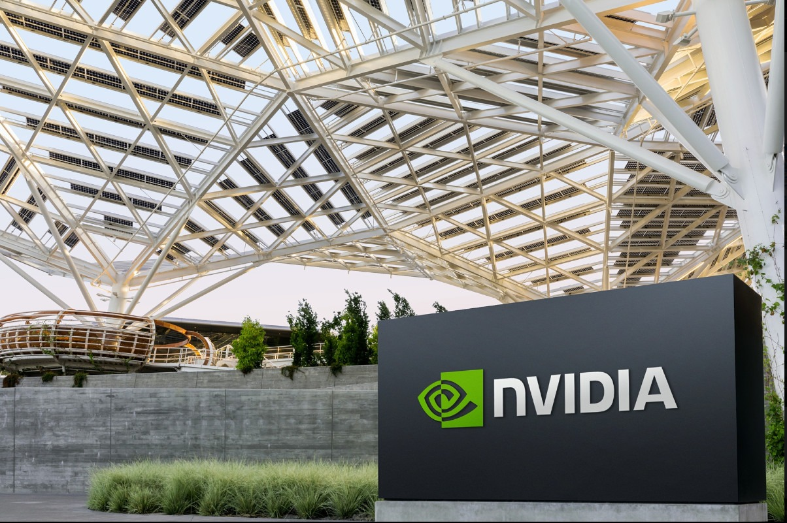

北京时间 11 月 12 日晚上 9 点 48 分，英伟达董事会发出一则很短的公告：黄仁勋已辞去总裁、首席执行官及董事会成员职务，即刻生效。
从 1993 年创办这家公司算起，他做了 33 年 CEO。英伟达从一家做游戏显卡的创业公司，长成了 AI 时代最关键的芯片供应商，几乎每一步都和他的名字绑在一起。
接任安排同时公布：执行副总裁兼首席财务官科莱特·克雷斯（Colette Kress）出任临时 CEO；董事会任命哈维·琼斯（Harvey C. Jones）为公司史上首位董事会主席。

黄仁勋（Jensen Huang），英伟达联合创始人，1993 年至 2026 年 11 月任总裁兼 CEO。图片来源：英伟达新闻中心高管简介
英伟达的新闻稿和当天提交给美国证交会的 8-K 文件，口径是一致的。8-K 写明，董事会于美国时间 11 月 11 日接受了黄仁勋的辞呈；文件里用的是他的法定英文名 Jen-Hsun Huang。
克雷斯在正式继任者确定之前，继续兼任执行副总裁和 CFO。董事会已经启动正式 CEO 的遴选，内部和外部候选人都会考虑。
董事会主席琼斯在新闻稿里说：「科莱特帮助带领英伟达走过了一段非凡的增长期，对我们的业务、客户、运营和财务状况有深入了解。她身后有一支经验丰富的领导团队，这支团队在执行英伟达战略、推进技术路线图方面发挥了关键作用。董事会对科莱特和领导团队充满信心，我们预计公司的运营、客户承诺和产品路线图将继续推进，不会中断。」
克雷斯的表态是：「英伟达的力量始终来自它的员工。我将与领导团队一起，在黄仁勋过去 33 年打下的非凡基础上继续建设。我们将继续推进让英伟达成为加速计算和 AI 领导者的工作，把握眼前的机遇。我们的重心仍然是服务客户、合作伙伴、开发者和股东。」
董事会对黄仁勋只有一段致谢：「黄仁勋对英伟达的贡献极为深远。英伟达是全球最具影响力的科技公司之一。董事会和公司感谢黄仁勋为公司和整个行业作出的不可估量的贡献。」
公告里没有黄仁勋本人的话，也没有说明辞职原因。下面讲的前因，来自英伟达此前的声明、黄仁勋本人的信和公开报道，需要分开来看。
事情的起点在 10 月下旬。据美国媒体报道，《纽约时报》称美国情报部门认定，一位名叫黄乐（Alice Huang）的女商人在向北京传递信息，并且与黄仁勋关系密切。两人同姓，并无亲属关系。
黄乐的身份，新加坡内政部 11 月 12 日的声明写得最清楚：她是香港居民，曾任新加坡注册公司 Megaspeed International 的 CEO、董事长和主要控制人之一。据 CNBC 报道，Megaspeed 是英伟达的客户。新加坡警方从 2025 年 2 月起调查 Megaspeed 涉嫌在采购服务器时虚假申报，今年 2 月认定没有足够证据证明黄乐本人犯有相关罪行，但因她在调查中提供了她明知不准确的信息，对她发出严厉警告并禁止再入境。新加坡方面特别说明，没有就间谍问题调查过她。
10 月 29 日，黄仁勋在接受彭博社采访时说，英伟达与 Megaspeed 的业务往来「正常，并不反常」，公司核查过对方部署的英伟达 GPU，「每一块都数过」。中国外交部发言人郭嘉昆随后表示，有关报道捕风捉影，纯属对华污蔑抹黑。
11 月 4 日，美国众议院外交事务委员会、中国问题特别委员会和情报常设特别委员会三位主席联名致信黄仁勋（信件于 11 月 5 日公开），要求他在 11 月 18 日出席一场闭门简报会，说明与黄乐的往来，以及英伟达防范外国间谍活动的措施。
11 月 8 日是周日。英伟达董事会宣布启动独立调查，由独立董事组成的委员会在外部律师协助下进行，并表示「没有理由认为国家安全或英伟达的机密受到损害」，同时对黄仁勋仍有信心。同一天，黄仁勋给全体员工发了一封信，承认「我对妻子不忠」，信里没有点名。关于国家安全，他写道：「董事会已启动独立调查。我支持调查，并将全力配合。」
11 月 9 日，美国总统特朗普对记者说，黄仁勋在电话里告诉他，自己完全不知道对方是间谍，「我真的相信他」。中国外交部同日回应，所谓「中国间谍」的论调纯属捕风捉影、污蔑抹黑。11 月 10 日，英伟达独立董事聘请美国纽约南区前代理联邦检察官 Joon H. Kim 及其所在的 Wachtell, Lipton, Rosen & Katz 律所负责调查。
转折出现在 11 月 11 日。《纽约时报》援引五名员工的说法报道，黄仁勋还与直接向他汇报的医疗健康业务副总裁有婚外关系。同一天，多名两党议员公开要求他辞职，参议员凯文·克莱默（Kevin Cramer）对 CNBC 说，「出于他自己的良知，他应该辞职」；《华尔街日报》报道董事会正准备让他离开。当晚，董事会接受了辞呈。
把这几条线按时间排一下，哪些来自公司、哪些来自他本人、哪些只是媒体报道，会清楚很多。

辞职之前的关键日期与信息来源。资料：英伟达声明与 8-K、CNBC、CNA、美国众议院外交事务委员会、中国外交部、新加坡内政部。制图：Agent无限核
需要说清楚的是：「间谍」目前只是媒体援引美方官员和情报评估的说法，情报本身是机密，没有公开；从目前公开的信息看，也没有任何机构就此提出指控；英伟达董事会的调查仍在进行。
把这一周放到一边，回头看黄仁勋在英伟达的记录，分量是实打实的。
1993 年 4 月 5 日，黄仁勋与 Chris Malachowsky、Curtis Priem 一起创办英伟达，目标是把 3D 图形带进游戏和多媒体市场。英伟达官网的简介写得很简单：他从公司成立起就担任总裁、CEO 和董事。创业前，他在 AMD 和 LSI Logic 工作过。

黄仁勋在英伟达 33 年的关键节点。资料：英伟达官网企业历程、新闻稿与财报，SEC 8-K，路透社。制图：Agent无限核
1999 年，英伟达上市，同年推出 GeForce 256，英伟达称之为世界上第一颗 GPU。这让它在游戏显卡市场站稳了脚跟。
真正决定后来二十年走向的，是 2006 年发布的 CUDA。它让 GPU 不再只用来画画面，科学家和工程师可以用它做大规模并行计算。在很长一段时间里，这是一笔看不到回报的投入；伯恩斯坦分析师斯泰西·拉斯贡（Stacy Rasgon）这周对 CNBC 说，英伟达今天的位置，来自黄仁勋「10 年前做的决定」。
2012 年，AlexNet 神经网络在英伟达 GPU 上取得突破，深度学习开始提速；2018 年，英伟达推出可实时光线追踪的 RTX。此后，从数据中心 GPU 到 Grace Blackwell，再到今年进入全面量产的 Vera Rubin，英伟达卖的已经不只是芯片，而是整机柜的 AI 计算系统，连同网络和软件。
CUDA 之上长出来的软件生态，是英伟达最难被复制的部分。英伟达官网称，全球已有超过 400 万开发者在为加速计算开发应用，超过 4 万家公司在使用英伟达的 AI 技术。
市场给出的回应同样直接。2022 年底 ChatGPT 发布后，AI 算力需求爆发；据 CNBC 统计，英伟达股价此后上涨约 14 倍。路透社报道，2025 年 10 月 29 日，英伟达成为全球第一家市值突破 5 万亿美元的公司。
财报数字更能说明规模。英伟达 2026 财年（截至 2026 年 1 月）营收 2159 亿美元，同比增长 65%。最近一份已公布的财报是 2027 财年第二季度，营收 962 亿美元，同比增长 106%；其中数据中心业务 890 亿美元，约占当季营收的 92.5%。

英伟达近期已公布的官方财务数字，均为 GAAP 口径。资料：英伟达 2026 财年第四季度及 2027 财年第二季度财报新闻稿。制图：Agent无限核
黄仁勋在 8 月那份财报里说的是：「AI 已经到了拐点……AI 基础设施建设正在全速推进。」公司给第三季度的营收指引是 1080 亿美元，上下浮动 2%，并注明没有计入任何来自中国的数据中心计算业务收入。
这些成绩之外，黄仁勋也是整个 AI 行业的代言人。猎头公司 Christian and Timbers 的 CEO 杰夫·克里斯琴（Jeff Christian）对 CNBC 的评价是：「他就是 AI 先生，他替整个行业说话。」
第一，英伟达第一次有了董事会主席。过去 33 年，公司没有设过董事会主席，黄仁勋同时是创始人、CEO 和董事。新任主席琼斯 73 岁，1993 年起就是英伟达董事，曾任 EDA 软件公司 Synopsys 的 CEO 和执行董事长，2004 年起任家族办公室 Square Wave Ventures 的管理合伙人。

交接前后的英伟达权力结构。资料：英伟达 11 月 12 日新闻稿与 SEC Form 8-K。制图：Agent无限核
据《卫报》报道，黄仁勋有几十名直接下属，这种扁平结构凸显了他对公司的掌控。CEO 与董事会主席分设之后，管理层和董事会在制度上第一次分开，新 CEO 不会再像黄仁勋那样同时是创始人、CEO 和董事。
第二，过渡期的掌舵人是 CFO。克雷斯今年 59 岁，2013 年 9 月加入英伟达任 CFO，此前在思科、微软等公司做了近 25 年财务工作。但她是「临时」CEO，同时还兼着 CFO，这个安排本身就说明，董事会还没有找到长期答案。
临时 CEO 科莱特·克雷斯（Colette Kress），2013 年 9 月起任英伟达执行副总裁兼 CFO，现继续兼任。图片来源：英伟达新闻中心高管简介
第三，股价已经先给出了反应。按 Yahoo Finance 行情，英伟达 11 月 11 日收盘价为 173.73 美元，比 11 月 6 日（上周五）的 186.64 美元低约 7%，比 10 月 6 日的近期收盘高点 239.24 美元低约 27%。11 月 12 日美股开盘报约 151 美元；截至北京时间 22 点 36 分，盘中报 156.56 美元，较前一交易日收盘下跌约 9.9%。这是盘中数字，不是收盘价。

英伟达（NVDA）近期每日收盘价与 11 月 12 日盘中价。资料：Yahoo Finance 行情数据。制图：Agent无限核
华尔街的看法分歧不小。据 CNBC 报道，伯恩斯坦在 11 月 12 日把英伟达的目标价从 400 美元下调到 200 美元；也有投资机构负责人对 CNBC 表示，在没有明确接班人的情况下，英伟达股票暂时「不可投资」。
第四，财报照常发布。英伟达确认，2027 财年第三季度财报仍按原计划在美国西部时间 11 月 17 日下午 1 点 20 分左右发布，下午 2 点召开电话会，也就是北京时间 11 月 18 日凌晨 5 点 20 分和 6 点。这将是黄仁勋离开后的第一份财报，届时由谁、以什么方式回答关于业务和继任的问题，值得关注。
董事会说预计运营、客户承诺和产品路线图「不会中断」，这是公司的预期，还需要时间检验。英伟达的大客户、云厂商和供应链伙伴，接下来都会看这一点能不能兑现。
第五，出口管制的讨论可能更紧。据 CNBC 报道，美国国会正在讨论把 AI Overwatch Act、MATCH Act、Chip Security Act 等收紧 AI 芯片出口的法案放进今年的国防授权法案，这起事件给了支持者更多理由；参议员伊丽莎白·沃伦（Elizabeth Warren）和吉姆·班克斯（Jim Banks）已在联合声明中呼吁尽快通过。CNBC 还提到，黄仁勋一向反对对华 AI 芯片实行严格出口管制。

英伟达位于美国加州圣克拉拉的总部。图片来源：英伟达，GlobeNewswire 新闻稿配图
中方的态度也很明确。中国外交部发言人毛宁 11 月 12 日表示：「中国的科技进步，靠的是自主创新和开放合作。美方应当停止编造所谓的『间谍叙事』，为实施科技封锁寻找借口。」
至于众议院三个委员会要求的那场 11 月 18 日闭门简报，黄仁勋已经不再担任英伟达任何职务，他是否出席、以什么身份出席，目前还没有公开消息。
33 年里，黄仁勋做对了几个很早、很孤独的决定，英伟达因此站到了 AI 浪潮的中心。也正因为公司和他个人绑得太紧，这一次他的离开，才会同时冲击股价、公司治理和华盛顿的政策讨论。
接下来要看的，是三件事：董事会的独立调查会给出什么结论，正式 CEO 会是谁，以及一家没有了创始人的英伟达，能不能把路线图照原样走下去。
来源清单：
英伟达新闻稿《NVIDIA Announces CEO Transition》（2026-11-12）：https://investor.nvidia.com/news/press-release-details/2026/NVIDIA-Announces-CEO-Transition/
GlobeNewswire 同文：https://www.globenewswire.com/news-release/2026/11/12/3401635/0/en/nvidia-announces-ceo-transition.html
英伟达 SEC Form 8-K（2026-11-12 提交，StockTitan 全文转载）：https://www.stocktitan.net/sec-filings/NVDA/8-k-nvidia-corp-reports-material-event-7ee30e4de444.html
英伟达董事会声明（2026-11-08）：https://investor.nvidia.com/news/press-release-details/2026/Statement-from-NVIDIA-Board-of-Directors/
英伟达独立董事声明（2026-11-10）：https://investor.nvidia.com/news/press-release-details/2026/Statement-from-the-Independent-Members-of-the-NVIDIA-Board/default.aspx
CNBC：黄仁勋致员工信与董事会声明全文（2026-11-08）：https://www.cnbc.com/2026/11/08/nvidia-jensen-huang-email-board-of-directors-statement.html
CNBC 直播报道（2026-11-12）：https://www.cnbc.com/2026/11/12/nvidia-jensen-huang-ceo-live-updates.html
CNBC：英伟达股价与分析师观点（2026-11-12）：https://www.cnbc.com/2026/11/12/nvidia-nvda-jensen-huang-second-affair.html
CNBC：国会辞职呼声与出口管制法案（2026-11-11）：https://www.cnbc.com/2026/11/11/nvidia-jensen-huang-congress-resign-ai-chips.html
美国众议院外交事务委员会新闻稿（2026-11-05）：https://foreignaffairs.house.gov/news/press-releases/chairmen-mast-moolenaar-and-crawford-request-jensen-huang-brief-congress-on-link-to-chinese-intelligence-asset
新加坡内政部声明（2026-11-12）：https://www.mha.gov.sg/media-room/newsroom/singapore-investigations-into-alice-huang-huang-le-and-megaspeed-international-pte-ltd/
CNA：黄仁勋称与 Megaspeed 往来正常（2026-10-30）：https://www.channelnewsasia.com/east-asia/nvidia-jensen-huang-megaspeed-international-6505791
TechCrunch（2026-11-11、11-12）：https://techcrunch.com/2026/11/12/nvidias-jensen-huang-resigns-chipmaker-names-cfo-colette-kress-as-interim-ceo/
《卫报》（2026-11-12）：https://www.theguardian.com/technology/2026/nov/12/nvidia-ceo-jensen-huang-resigns
《华盛顿邮报》（特朗普表态，2026-11-12）：https://www.washingtonpost.com/technology/2026/11/12/nvidia-jensen-huang-denied-his-alleged-affair-then-story-changed/
新华网：外交部回应（2026-11-09）：https://www.news.cn/20261109/fefa7c1749034c78aeff8b980d870554/c.html
外交部 2026 年 11 月 12 日例行记者会：https://www.mfa.gov.cn/fyrbt_673021/202611/t20261112_12058185.shtml
英伟达 2027 财年第二季度财报：https://investor.nvidia.com/news/press-release-details/2026/NVIDIA-Announces-Financial-Results-for-Second-Quarter-Fiscal-2027/default.aspx
英伟达 2026 财年第四季度及全年财报：https://investor.nvidia.com/news/press-release-details/2026/NVIDIA-Announces-Financial-Results-for-Fourth-Quarter-and-Fiscal-2026/
英伟达官网企业历程：https://www.nvidia.com/en-us/about-nvidia/corporate-timeline/
英伟达官网黄仁勋简介：https://www.nvidia.com/en-us/about-nvidia/board-of-directors/jensen-huang/
路透社：英伟达市值突破 5 万亿美元（2025-10-29）：https://www.reuters.com/business/nvidia-poised-record-5-trillion-market-valuation-2025-10-29/
Yahoo Finance NVDA 行情：https://finance.yahoo.com/quote/NVDA/